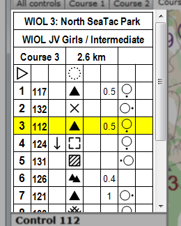

Control Descriptions Pane
The control descriptions pane is located in the left part of the main window. The size of the control descriptions pane can be adjusted by using the mouse to drag the border that separates it from the map display. If the entire control description is not shown, use the scroll bar to move it up or down.

The control description pane displays the control descriptions for the current course. If the "all controls" tab is selected, the control descriptions for all controls in the event are displayed. The selected control (if any) is highlighted in yellow.
The descriptions for a control are changed directly using the control description pane. Click once anywhere in a control description line to select the control and highlight the line. Once a control is selected, click again on a box within the highlighted line to change the contents of the box. A pop-up menu appears with all possible symbols for that box. To remove the symbol from a box, selected the last item in the menu (it appears as a large square).
Textual items, such as the feature dimensions, are entered by clicking on them, then typing into the pop-up edit box and pressing Enter. The event title, secondary title, and course climb can also be edited directly by clicking twice in the corresponding box.